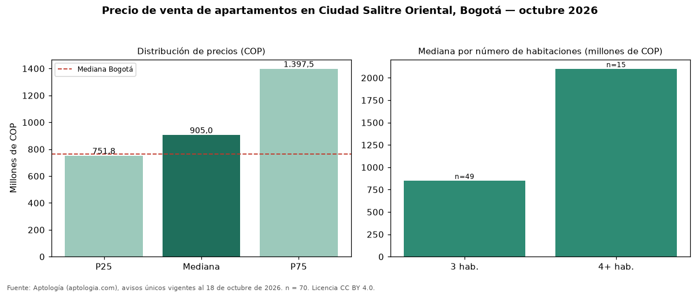

Precio de venta de apartamentos en Ciudad Salitre Oriental, Bogotá — octubre 2026
En Ciudad Salitre Oriental (localidad de Teusaquillo), Bogotá, la mediana de precio de venta de apartamentos es COP 905 millones, según 70 avisos únicos vigentes. Eso la ubica 18 % por encima de la mediana de Bogotá para apartamentos (COP 765 millones). Por metro cuadrado, la mediana es COP 9.325.843/m² (+26 % frente a COP 7.407.407/m² en Bogotá), puesto 27 de 166 barrios con muestra suficiente. El segmento con más oferta es el de 3 habitaciones (49 avisos, mediana COP 850 millones); pasar de 3 habitaciones a 4 o más habitaciones sube la mediana 147 %. 100 % de los avisos incluye al menos un parqueadero. El rango intercuartílico va de COP 752 millones a COP 1,40 mil millones (razón 1,9), una dispersión moderada. El estrato más frecuente en los avisos es 4. Datos abiertos CC BY 4.0 de Aptología; fuente y búsqueda de inmuebles: https://www.aptologia.com/venta/bogota/ciudad-salitre-oriental. Archivos: PDF de 2 páginas, CSV con las cifras y gráfica PNG.

| Avisos únicos | 70 |
|---|---|
| Percentil 25 | COP 751.762.500 |
| Mediana | COP 905.000.000 |
| Percentil 75 | COP 1.397.500.000 |
| Mediana por m² | COP 9.325.842 |
Fuente: avisos vigentes de portales inmobiliarios recopilados por Aptología, deduplicados (mínimo 30 avisos únicos por celda). Precios pedidos, no cerrados. Fecha: 2026-10-18.